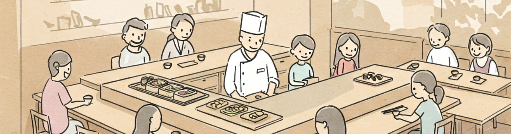

初めての方へ

数ある寿司店の中から「和招縁」にご関心をお寄せいただき、誠にありがとうございます。
私たちの使命は、「地元の恵みを活かした本物のおいしさを届け、一貫一貫から幸せを創り出すこと」です。
生まれ育ったこの土地で水揚げされた、旬の魚を厳選してお鮨を握っています。素材が持つ旨みを最大限に引き出し、その時々にふさわしい食材や調理方法を取り入れながら、お客様一人ひとりに寄り添った逸品をご提供するよう心がけています。
初めての方でも気軽にお立ち寄りいただき、「また来たい」「地元から愛され続けるお店だ」と感じていただけるような場所を目指し、スタッフ一同、日々精進しております。
当店は、二店舗ございますので、以下のボタンより、ご希望の店舗をご確認ください。
私たちの使命は、「地元の恵みを活かした本物のおいしさを届け、一貫一貫から幸せを創り出すこと」です。
生まれ育ったこの土地で水揚げされた、旬の魚を厳選してお鮨を握っています。素材が持つ旨みを最大限に引き出し、その時々にふさわしい食材や調理方法を取り入れながら、お客様一人ひとりに寄り添った逸品をご提供するよう心がけています。
初めての方でも気軽にお立ち寄りいただき、「また来たい」「地元から愛され続けるお店だ」と感じていただけるような場所を目指し、スタッフ一同、日々精進しております。
当店は、二店舗ございますので、以下のボタンより、ご希望の店舗をご確認ください。

塩町店のコンセプト
伝統的な寿司の技と味わいを大切にし、厳選された上質な魚介類を使用した本格寿司をご提供しております。格式高い空間で、特別なひとときをお過ごしください。

福中店のコンセプト
店内に設けた生け簀からその場で調理する鮮度抜群の地元の魚を中心としたお料理をご用意しております。3階建ての洗練された空間で、贅沢なひとときをお楽しみいただけます。
お品書き
大トロ握り
最高級の大トロを使用し、とろける食感と深い旨味が特徴。

中トロ握り
脂と旨味のバランスが絶妙。上品な味わいをご堪能ください。

鯛の握り
新鮮な鯛を厳選し、繊細な味わいを引き出しました。

穴子握り
柔らかい穴子に秘伝のタレを絡めた逸品。
店舗ギャラリー
塩町店


福中店